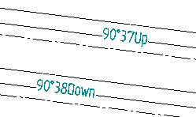
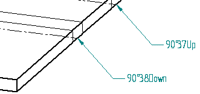

Bend Callouts page (Bend Table Properties dialog box)
The Bend Callouts tab is available when you place a bend table on a drawing that contains a flattened sheet metal drawing view. Use these options to specify the sheet metal bend information that you want to show in the bend callouts.
The Bend Callouts tab is not available when you edit the bend table properties.
- Bend Callout Text
-
 Bend Angle
Bend Angle-
Displays the outside angle (B) with no sign, such as 120°.

If you want to show bend direction, such as Up or Down, also click the Bend Direction button.
Tip:To display a signed angle, such as –120°, type %BA instead of selecting the Bend Angle button.
- Included Angle
-
Displays the inside bend angle (A) with no sign, such as 90°.
If you want to show bend direction, such as Up or Down, also click the Bend Direction button.
- Bend Radius
-
References bend radius information for flattened sheet metal views.
- Bend Quantity
-
References bend quantity information for flattened sheet metal views.
- Bend Sequence
-
References bend sequence information for flattened sheet metal views.
- Bend Direction
-
References bend direction information for flattened sheet metal views.
- Symbols and Values
-
Opens the Select Symbols and Values dialog box for you to generate the appropriate symbols and model-derived values without having to type the property text codes yourself. Examples of the types of symbols you can select include ± (plus minus), ° (degree), and ∅ (diameter). Examples of model-derived values include hole references, bend data, and weld beads.
- Bend Callout Type
-
- Place bend callouts inline with the centerlines
-
Places the bend callouts inline with the bend centerline.

If you do not select this option, the callouts are placed as balloons.

How do I
Place a bend table on a drawing sheetCreate a bend table for the part
Learn more
Bend tablesLook up more details
Bend Table command (Draft)Bend Table command (Sheet Metal)
Bend Table dialog box
Bend Table command bar (Draft)
Bend Table Properties dialog box
Update Bend Table command